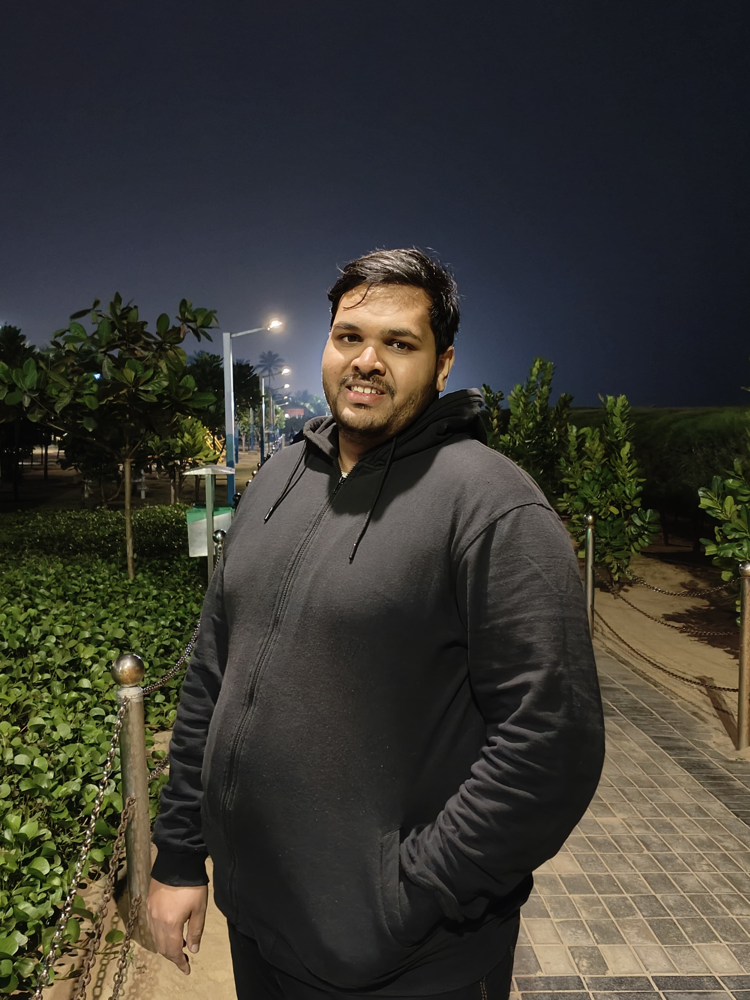

Linkedin
Contact Me
My Hobbies
Summary
Detail-oriented and highly motivated software developer with 2 years of experience in building scalable web applications using Python, Flask, Django, JavaScript, and React. Proficient in REST API development, database optimization and strong problem-solving skills and a passion for designing robust, efficient solutions that drive business success.
Education
- Completed B.Tech from Biju Patnaik University of Technology
- Completed 12th from Council of Higher Secondary Education, Odisha
- Completed 10th from Council of Indian Secondary Certificate Examination
Work Experience
- Developed and maintained full stack web applications using Python (Django, Flask) and ReactJS including advanced Python features, asynchronous programming and multithreading, delivering scalable and efficient solutions for enterprise projects.
- Deployed RESTful APIs that facilitated real-time data interactions between the frontend and backend, enhancing overall system efficiency.
- Leveraged Docker and Microservices architecture to enhance deployment processes, improving application scalability and performance.
- Collaborated with cross-functional teams to integrate frontend and backend services, resulting in seamless user experiences and improved system reliability.
- Developed unit and integration test cases for key application components for seamless integration and successfully integrated the test suites into CI/CD pipelines to automate quality assurance processes.
- Optimized database interactions with PostgreSQL and MongoDB, reducing query execution times and improving overall application efficiency.
- Provided a training session on Rust Programming to a team of 7 members
Skills
- Python
- Flask
- Django
- React
- JavaScript
- REST API
- SQL
- PostgreSQL
- MongoDB
- Git
- Docker
- Microservices
- CI/CD
- Rust
- TypeScript
- HTML5>
- CSS3
- Fast API
Awards and Achievements
- Rising Star Award (02/2023)
- Excellence in Execution - Delivery (04/2024)
- Monthly Award - I Appreciate You (11/2024)